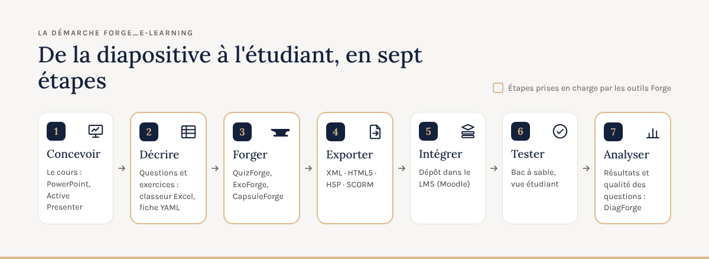
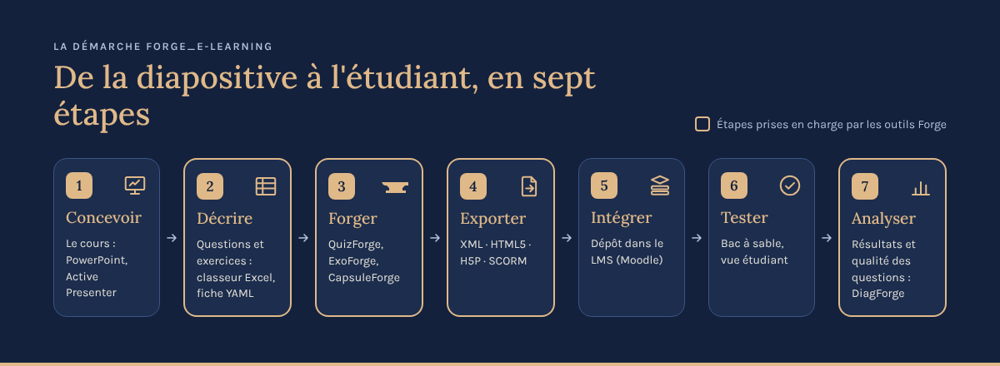
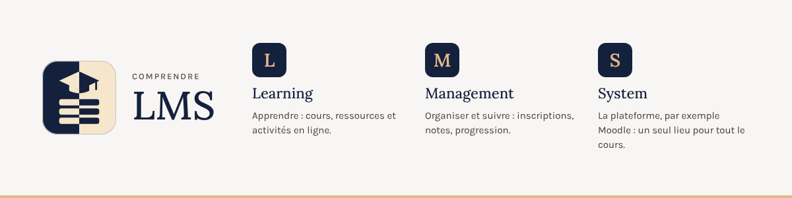
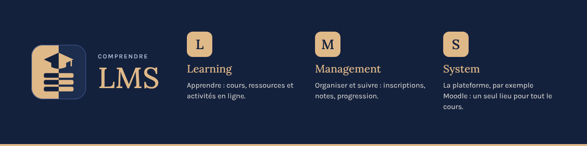
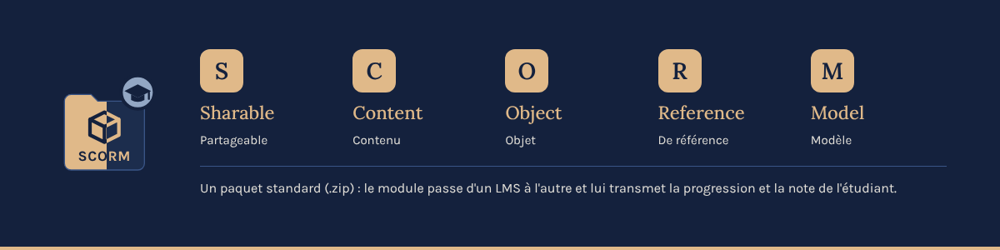

Pourquoi de tels outils ?#
Un enseignant qui veut proposer à ses étudiants autre chose que des diapositives en PDF dispose déjà d’outils solides : une plateforme d’apprentissage (Moodle), un logiciel de présentation (PowerPoint), un logiciel de capsules vidéo (ActivePresenter), un enregistreur d’écran (OBS), un éditeur de son (Audacity), des formats d’échange (SCORM, H5P, HTML). Forge ne les remplace pas : il s’appuie sur eux et comble ce qui manquait à l’auteur pour passer, en un temps raisonnable, d’un cours existant à des activités en ligne de qualité contrôlée.
La démarche#


Concevoir le cours : diapositives, notes, exercices. Cette étape est hors du périmètre de Forge. Le cours appartient à l’enseignant ; Forge part du cours existant et ne le fournit pas.
Décrire les activités dans un fichier simple : un classeur Excel pour les questions (QuizForge), une fiche YAML pour un exercice guidé (ExoForge), un fichier de chapitre pour un cours interactif (CapsuleForge).
Forger : l’outil construit l’activité et contrôle ce qui peut l’être (rétroaction absente, clé plus longue que les leurres, durée d’une section, formule mal écrite…).
Exporter dans un format que la plateforme accepte : Moodle XML, GIFT, page HTML5, paquet SCORM.
Intégrer dans la plateforme (dépôt dans Moodle).
Tester comme un étudiant, dans un bac à sable ou en mode prévisualisation.
Analyser les résultats des étudiants et la qualité des questions (DiagForge), puis revenir à l’étape 2.
Trois principes traversent les outils :
une source texte, relue par l’enseignant : le fichier source (classeur, fiche, chapitre) est la seule référence ; on le corrige et on reconstruit, au lieu de retoucher une sortie ;
des réglages justifiés : un choix par défaut (nombre d’essais, barème, durée d’une section, place d’une question) renvoie à une fiche de lecture de la bibliographie, avec son niveau de preuve ;
des formats ouverts : ce que Forge produit se dépose dans n’importe quelle plateforme qui lit ces formats et s’ouvre dans un navigateur, sans logiciel propriétaire côté étudiant.
Ce que font les outils existants, et ce qui manquait#
Les plateformes d’apprentissage (LMS) en général#


Rôle. Un LMS (Learning Management System) réunit en un lieu les inscriptions, les ressources, les activités, les notes et le suivi de la progression.
Ce qu’il fait bien. Gérer qui voit quoi et quand, noter, garder les traces, accueillir des contenus aux formats standard.
Ce qui manquait. Un LMS est un réceptacle : la qualité d’une question ou d’un exercice dépend de la façon dont il a été écrit, et l’écrire dans les formulaires de la plateforme est lent, peu réutilisable d’une plateforme ou d’une année à l’autre.
Moodle#
Rôle. LMS libre (licence GNU GPL), très répandu dans l’enseignement supérieur. À la date de cette page, la dernière version est Moodle 5.3 (octobre 2026), version à support long comme la 4.5 (calendrier des versions, notes de version).
Ce qu’il fait bien. Un moteur de test très complet (types de questions, comportements à essais multiples, questions aléatoires tirées d’une banque, rétroactions par réponse) ; l’import de banques de questions aux formats Moodle XML et GIFT ; des rapports détaillés (notes, réponses, statistiques par question) ; l’accueil des paquets SCORM et des activités H5P.
Ce qui manquait. Saisir des dizaines de questions dans les formulaires prend du temps et rien ne signale une question mal écrite avant qu’elle ne soit posée ; les rapports donnent les indicateurs classiques mais pas leur lecture (quelle question revoir, quel leurre ne sert à rien, quelle erreur est la plus fréquente). QuizForge écrit les questions dans un classeur et contrôle leur écriture [Hal94, RRW16] ; DiagForge transforme les exports en une fiche lisible et en images pour les étudiants. Côté SCORM, la documentation de Moodle indique que SCORM 1.2 est entièrement pris en charge et que SCORM 2004 ne l’est pas officiellement (FAQ SCORM de Moodle) : c’est une limite à garder en tête pour les paquets de CapsuleForge (voir État des outils).
PowerPoint#
Rôle. Logiciel de présentation de Microsoft (sous licence commerciale), outil de travail quotidien de beaucoup d’enseignants : diapositives, animations, narration enregistrée diapositive par diapositive, formules (par exemple avec le complément IguanaTeX).
Ce qu’il fait bien. Écrire et animer un cours ; enregistrer une narration ; exporter en vidéo.
Ce qui manquait. Une vidéo exportée est un bloc : pas de sous-titres relus, pas de questions intercalées, pas de parcours au choix, pas de traces dans la plateforme, une taille importante. CapsuleForge relit le diaporama (images des états d’animation, sons de la narration), le découpe en sections courtes [BCJ18, GKR14], puis y ajoute sous-titres, questions et exercices, sans demander de refaire le cours.
ActivePresenter#
Rôle. Logiciel de capsules et de simulations logicielles d’Atomi Systems ; la version 10 tourne sous Windows et macOS, avec une édition gratuite pour un usage non commercial et des éditions payantes ; il exporte en vidéo, HTML5, SCORM et xAPI (site de l’éditeur).
Ce qu’il fait bien. Enregistrer l’écran et en faire une démonstration ou une simulation interactive (« montrer » puis « faire faire »), avec questions et paquet SCORM.
Ce qui manquait. La durée de chaque diapositive vient de l’enregistrement et le découpage reste haché ; le projet est un fichier binaire difficile à relire ou à réutiliser hors du logiciel ; les questions et les exercices y vivent à part de ceux du cours. CapsuleForge reprend un projet ActivePresenter ou ses exports vidéo, et regroupe démonstrations, cours et exercices dans un même chapitre.
OBS Studio#
Rôle. Logiciel libre (GNU GPL v2) d’enregistrement et de diffusion vidéo ; la version 33 est sortie fin octobre 2026 (site officiel, historique des versions).
Ce qu’il fait bien. Filmer l’écran, une webcam et le micro, avec des scènes composées.
Ce qui manquait. Le fichier produit est une longue vidéo à monter ensuite ailleurs. CapsuleForge filme lui-même l’écran, le micro et la webcam (commande filmer) et importe aussitôt l’enregistrement en pas découpés aux silences de la voix, sans passer par un logiciel de montage.
Audacity#
Rôle. Éditeur de son libre (licence GNU GPL) ; la version 4.0 est sortie en septembre 2026 (journal des versions).
Ce qu’il fait bien. Nettoyer, couper et normaliser une narration.
Ce qui manquait. Le travail sur le son se fait loin du texte : corriger une phrase dite demande de retrouver l’instant à l’oreille. Dans CapsuleForge, le texte dit est transcrit, relu phrase par phrase avec le son, et devient la source des sous-titres, de la traduction et, au besoin, d’une voix de synthèse [XLJ+24].
SCORM#


Rôle. Norme d’empaquetage de contenus pédagogiques publiée par l’ADL (Advanced Distributed Learning) : un paquet ZIP qui passe d’une plateforme à l’autre et lui transmet progression, note et réponses. Les deux versions en usage sont SCORM 1.2 (2001) et SCORM 2004, dont la 4e édition date de 2009 (ADL, spécification 2004, 4e édition).
Ce qu’il fait bien. Rendre un contenu portable et suivi.
Ce qui manquait. Rien dans la norme : ce qui manquait, c’était un moyen simple de produire des paquets propres à partir d’un fichier source. ExoForge produit des paquets SCORM 1.2 ; CapsuleForge des paquets SCORM 2004 (reprise de l’avancement, note pondérée, interactions).
H5P#
Rôle. Technologie libre (licence MIT) de contenus interactifs en HTML5 : vidéo interactive, scénario à embranchements, glisser-déposer… ; elle est intégrée à Moodle sous la forme d’une activité « Contenu interactif H5P » (h5p.org, documentation Moodle).
Ce qu’il fait bien. Des activités variées, éditables dans le navigateur.
Ce qui manquait. Chaque activité se construit à la main dans l’éditeur H5P ; un type de contenu doit être installé sur la plateforme pour être joué. L’export H5P est prévu dans Forge, après le SCORM (voir Prochaines étapes).
HTML#
Rôle. Le format des pages web, lisible par tout navigateur, en ligne ou depuis le disque.
Ce qu’il fait bien. Tout afficher, partout, sans installation : formules (MathJax), graphiques, son, interactions.
Ce qui manquait. Une page interactive écrite à la main pour chaque exercice ne se maintient pas. ExoForge et CapsuleForge construisent ces pages à partir de la fiche ou du chapitre, avec un moteur commun : corriger le moteur corrige tous les exercices.
Ce que Forge ajoute#
Besoin de l’enseignant |
Outil existant |
Ce que Forge ajoute |
|---|---|---|
écrire beaucoup de questions vite, et bien |
Moodle (formulaires, import XML/GIFT) |
un classeur par lot de questions ; contrôle de l’écriture (clé plus longue, « toutes les réponses », négation…) ; barème et score au hasard ; leurres codés par erreur type [Hal94, KSK23, SBS14] |
faire s’exercer avec des données qui changent |
questions calculées de Moodle |
des exercices pas à pas, guidés puis autonomes, avec diagnostic de l’erreur commise et données tirées [ARM03, SHG20] |
savoir quelles questions revoir |
rapports de Moodle |
une fiche du professeur lisible, des images pour les étudiants, l’analyse par erreur type, l’équité des tirages [PL24, QL19] |
un cours en ligne court, suivi, accessible |
PowerPoint, ActivePresenter, OBS, Audacity |
un chapitre en sections courtes, sous-titré, traduit, avec questions et exercices intercalés et un paquet SCORM [DG23, GKR14, LJ24] |
Les limites connues de ces apports (ce qui n’a pas encore été essayé avec de vrais étudiants, ce qui manque) sont sur la page État des outils. Une limite vaut pour tous les outils : ils ne garantissent pas la justesse d’une question ou d’un exercice. Le contenu reste à écrire, et à relire, par l’enseignant.
Les références citées sont sur la page Liste des références.